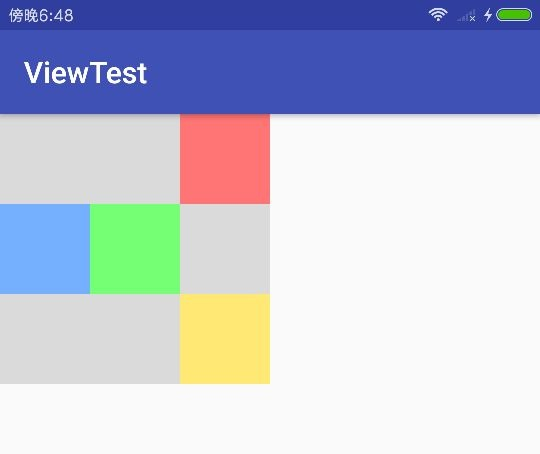

概述 View 是由视图和属性组成的控件，实现一个 View 的自定义，主要包括定义它自身的尺寸，以及绘制它的内容，并且在自身属性发生改变时能正确更新其绘制的内容。
ViewGroup 是 View 的容器类型，内部可容纳多个 View，并对子 View 的位置进行规划，根据自身特性的不同，子 View 的摆放特点也各不相同。由于 ViewGroup 本身也是 View 的子类，所以 ViewGroup 本身也可作为子View 出现。自定义 ViewGroup 时，更着重于对子 View 位置的处理，并且尺寸由子 View 的尺寸和摆放位置决定，在一些复杂的自定义 View 中，内容的绘制和子 View 位置的处理可能显的同等重要。
MeasureSpec MeasureSpec 负责生成 View 的 onMeasure方法中所传递的 measureSpec 参数和从中提取信息，measureSpec 参数将携带父 View 提供的尺寸和测量模式信息，作为确定 View 自身尺寸和 View 继续子View的测量参考。
measureSpec 参数是一个32位int型值，其中高两位将保存测量模式的值，低30位保存尺寸大小，MeasureSpec 提供了生成 measureSpec 参数的方法，它使用位运算将模式和尺寸信息保存至 measureSpec 参数中。
MeasureSpec 部分源码
1 2 3 4 5 6 7 8 9 10 11 12 13 14 15 16 17 18 19 20 21 22 23 24 25 26 private static final int MODE_SHIFT = 30 ;private static final int MODE_MASK = 0x3 << MODE_SHIFT;private static final int UNSPECIFIED = 0 << MODE_SHIFT;private static final int EXACTLY = 1 << MODE_SHIFT;private static final int AT_MOST = 2 << MODE_SHIFT;public static int makeMeasureSpec (int size, int mode) if (isUseBrokenMakeMeasureSpec){ return size + mode; }else { return (size & ~MODE_MASK) | (mode & MODE_MASK); } } public static int getMode (int measureSpec) return (measureSpec & MODE_MASK); } public static int getSize (int measureSpec) return (measureSpec & ~MODE_MASK); }
当实现View的 onMeasure 方法时，可根据测量模式确定View的尺寸，下面是3种测量模式。
模式
描述
对应布局参数
AT_MOST
父容器指定了 View 最大可用大小
一般对应 WRAP_CONTENT
EXACTLY
父容器检测到 View 精确大小
MATCH_PARENT 或 固定 dp
UNSPECIFIED
父容器对 View 大小无限制
其他
每个 View 的 measureSpec 参数由父容器结合 View 自身的布局参数将要对 View 进行测量时生成，下面是 ViewGroup 的 getChildMeasureSpec 方法，负责生成子 View 的 measureSpec。
1 2 3 4 5 6 7 8 9 10 11 12 13 14 15 16 17 18 19 20 21 22 23 24 25 26 27 28 29 30 31 32 33 34 35 36 37 38 39 40 41 42 43 44 45 46 47 48 49 50 51 public static int getChildMeasureSpec (int spec, int padding, int childDimension) int specMode = MeasureSpec.getMode(spec); int specSize = MeasureSpec.getSize(spec); int size = Math.max(0 , specSize - padding); int resultSize = 0 ; int resultMode = 0 ; switch (specMode) { case MeasureSpec.EXACTLY: if (childDimension >= 0 ) { resultSize = childDimension; resultMode = MeasureSpec.EXACTLY; } else if (childDimension == ViewGroup.LayoutParams.MATCH_PARENT) { resultSize = size; resultMode = MeasureSpec.EXACTLY; } else if (childDimension == ViewGroup.LayoutParams.WRAP_CONTENT) { resultSize = size; resultMode = MeasureSpec.AT_MOST; } break ; case MeasureSpec.AT_MOST: if (childDimension >= 0 ) { resultSize = childDimension; resultMode = MeasureSpec.EXACTLY; } else if (childDimension == ViewGroup.LayoutParams.MATCH_PARENT) { resultSize = size; resultMode = MeasureSpec.AT_MOST; } else if (childDimension == ViewGroup.LayoutParams.WRAP_CONTENT) { resultSize = size; resultMode = MeasureSpec.AT_MOST; } break ; case MeasureSpec.UNSPECIFIED: if (childDimension >= 0 ) { resultSize = childDimension; resultMode = MeasureSpec.EXACTLY; } else if (childDimension == ViewGroup.LayoutParams.MATCH_PARENT) { resultSize = View.sUseZeroUnspecifiedMeasureSpec ? 0 : size; resultMode = MeasureSpec.UNSPECIFIED; } else if (childDimension == ViewGroup.LayoutParams.WRAP_CONTENT) { resultSize = View.sUseZeroUnspecifiedMeasureSpec ? 0 : size; resultMode = MeasureSpec.UNSPECIFIED; } break ; } return MeasureSpec.makeMeasureSpec(resultSize, resultMode); }
在 ViewGroup 的 measureChild 方法中有对 getChildMeasureSpec 的调用。
1 2 3 4 5 6 7 8 9 protected void measureChild (View child, int parentWidthMeasureSpec, int parentHeightMeasureSpec) final ViewGroup.LayoutParams lp = child.getLayoutParams(); final int childWidthMeasureSpec = getChildMeasureSpec(parentWidthMeasureSpec, mPaddingLeft + mPaddingRight, lp.width); final int childHeightMeasureSpec = getChildMeasureSpec(parentHeightMeasureSpec, mPaddingTop + mPaddingBottom, lp.height); child.measure(childWidthMeasureSpec, childHeightMeasureSpec); }
自定义 View 属性 概述 一个合格的 View 是拥有多种可设置属性的，包括从 Java 代码和 XML 布局文件中设置两种方式，Android SDK 提供的原生 View 本身具有丰富的属性，这里实现自定义 View 的 XML 属性。
1 2 3 4 5 6 7 <?xml version="1.0" encoding="utf-8" ?> <resources> <declare-styleable name="TestView" > <attr name="attr name" format="value type" /> ... </declare-styleable> </resources>
使用 <declare-styleable/> 标签创建view的自定义属性，其中 name 最好指定为自定义View的名字，方便和 View 对应。在内部包含的 <attr/> 标签为该 View 支持的自定义属性列表，包含一个属性名字和引用的类型，定义后即可在布局中使用自定义 View 的属性，与系统属性所用的 android 命名空间不同，自定义属性需要使用 app 命名空间，自定义属性支持以下的所有 Format 类型。
format类型
描述
integer
指定一个整型数值
boolean
指定一个布尔型值
float
指定一个浮点型数值
string
指定一个字符串类型值
color
指定一个颜色的16进制数值或color资源的引用
dimension
指定Android中支持的尺寸类型（dp,sp,px…）或dimen资源的引用
fraction
指定一个百分比（20%，10%p），带p的支持分母因子
reference
指定一个引用类型，可以使任何资源的引用（drawable,color,dimen…）
flag
只能使用flag内定义的值，值的类型只能为整型
enum
和flag功能相同，但可以和integer类型混用，可指定定义外的int值
定义完属性后，即可在view的构造方法里，通过 AttributeSet 参数获取在xml中定义的属性值 。
1 2 3 4 5 6 7 8 9 public constrac (Context context, @Nullable AttributeSet attrs) super (context, attrs); TypedArray array = getContext().obtainStyledAttributes(attrs, R.styleable.AttrTestView); final int colorAttr = array.getColor(R.styleable.AttrTestView_colorAttr, 0 ); final xx attr = array.getXX(..); ... }
下面是每种类型定义以及获取的完整示例：
基本类型 基本类型 int，boolean，float，String。
1 2 3 4 5 6 7 <declare-styleable name ="AttrTestView" > <attr name ="intAttr" format ="integer" /> <attr name ="boolAttr" format ="boolean" /> <attr name ="floatAttr" format ="float" /> <attr name ="stringAttr" format ="string" /> ... </declare-styleable >
1 2 3 4 5 6 <com.example.viewtest.view.AttrTestView ... app:intAttr ="52" app:boolAttr ="true" app:floatAttr ="0.56" app:stringAttr ="hello" />
1 2 3 4 final int intAttr = array.getInt(R.styleable.AttrTestView_intAttr, 0 );final boolean boolAttr = array.getBoolean(R.styleable.AttrTestView_boolAttr, false );final float floatAttr = array.getFloat(R.styleable.AttrTestView_floatAttr, 0F );final String stringAttr = array.getString(R.styleable.AttrTestView_stringAttr);
色彩和尺寸类型
1 2 <attr name ="dimenAttr" format ="dimension" /> <attr name ="colorAttr" format ="color" />
使用，色彩类型可指定16进制颜色值或资源的引用，尺寸类型可指定支持的尺寸类型和引用
1 2 3 4 5 6 7 <com.example.viewtest.view.AttrTestView ... app:dimenAttr ="10dp" app:dimenAttr ="15px" app:dimenAttr ="@dimen/testDimen" app:colorAttr ="@color/testColor" app:colorAttr ="#ffaabbcc" />
1 2 final int colorAttr = array.getColor(R.styleable.AttrTestView_colorAttr, 0 );final float dimenAttr = array.getDimension(R.styleable.AttrTestView_dimenAttr, 0 );
引用类型
1 <attr name ="refAttr" format ="reference" />
1 2 3 4 5 6 <com.example.viewtest.view.AttrTestView ... app:refAttr ="@dimen/testDimen" app:refAttr ="@drawable/ic_test" app:refAttr ="@string/testString" app:refAttr ="@color/testColor" />
1 2 3 final Drawable refIcon = array.getDrawable(R.styleable.AttrTestView_refAttr);final int refColor = array.getColor(R.styleable.AttrTestView_refAttr, 0 );...
百分比类型
1 <attr name ="fractionAttr" format ="fraction" />
使用，有两种方式，默认(x%)和带有分母因子(x%p)的，在获取时有差异
1 2 3 4 <com.example.viewtest.view.AttrTestView ... app:fractionAttr ="10%" app:fractionAttr ="10%p" />
1 2 3 4 5 6 float getFraction (int index, int base, int pbase, float defValue)
1 2 3 4 5 6 7 8 9 10 array.getFraction(R.styleable.AttrTestView_fractionAttr, 1 , 2 , 0F ); array.getFraction(R.styleable.AttrTestView_fractionAttr, 2 , 2 , 0F ); array.getFraction(R.styleable.AttrTestView_fractionAttr, 2 , 1 , 0F ); array.getFraction(R.styleable.AttrTestView_fractionAttr, 2 , 2 , 0F );
flag 类型
定义，flag 可指定一组限制值，定义后，属性只能使用组内的数值，数值类型为数字
1 2 3 4 5 <attr name ="flagAttr" > <flag name ="FLAG_0" value ="0x01" /> <flag name ="FLAG_1" value ="0x02" /> ... </attr >
使用，使用时还可以使用按位或 | 运算符组合多个值
1 2 3 4 <com.example.viewtest.view.AttrTestView ... app:flagAttr ="FLAG_0|FLAG_1" app:flagAttr ="FLAG_0" />
1 final int flagAttr = array.getInt(R.styleable.AttrTestView_flagAttr, 0 );
枚举类型
定义，和 flag 定义形式相同，不过可以组合 integer 类型
1 2 3 4 5 <attr name ="enumAttr" format ="integer" > <flag name ="ENUM_0" value ="0" /> <flag name ="ENUM_1" value ="1" /> ... </attr >
当组合 Integer 类型时，可直接指定数字，否则和 flag 一样，只能使用组内定义的值
1 2 3 4 5 <com.example.viewtest.view.AttrTestView ... app:flagAttr ="123" app:flagAttr ="ENUM_0|ENUM_1" app:flagAttr ="ENUM_0" />
1 final int enumAttr = array.getInt(R.styleable.AttrTestView_enumAttr, 0 );
自定义 View
实现一个自定义 View，首先需要定义自身尺寸，然后绘制自身内容，最后提供自定义的 View 属性。
首先需要实现 onMeasure 测量方法，以指明 View 尺寸，根据 measureSpec 参数中的模式和基础尺寸，确定最终尺寸，下面提供一种通用的实现：
1 2 3 4 5 6 7 8 9 10 11 12 13 14 15 16 17 @Override protected void onMeasure (int widthMeasureSpec, int heightMeasureSpec) final int baseWidth = View.MeasureSpec.getSize(widthMeasureSpec); final int baseHeight = View.MeasureSpec.getSize(heightMeasureSpec); final int widthMode = View.MeasureSpec.getMode(widthMeasureSpec); final int heightMode = View.MeasureSpec.getMode(heightMeasureSpec); final int width = widthMode == MeasureSpec.EXACTLY ? baseWidth : Math.min(baseWidth, getWrapWidth(baseWidth)); final int height = heightMode == MeasureSpec.EXACTLY ? baseHeight : Math.min(baseWidth, getWrapHeight(baseHeight)); super .onMeasure(MeasureSpec.makeMeasureSpec(width, widthMode), MeasureSpec.makeMeasureSpec(height, heightMode)); }
这里最后调用的父类的 onMeasure 方法，将会调用 setMeasuredDimension 方法设置自身尺寸，当然也可以直接调用这个方法
1 2 3 4 protected void onMeasure (int widthMeasureSpec, int heightMeasureSpec) setMeasuredDimension(getDefaultSize(getSuggestedMinimumWidth(), widthMeasureSpec), getDefaultSize(getSuggestedMinimumHeight(), heightMeasureSpec)); }
在 onMeasure 方法执行后，可以使用 getMeasuredWidth() 和 getMeasuredHeight() 获取自身宽高
实现 onDraw 方法，绘制 View 内容，使用 Canvas 和 Paint 组合进行绘制工作
1 2 3 4 5 6 @Override protected void onDraw (Canvas canvas) super .onDraw(canvas); canvas.drawXX(...); ... }
下面编写一个非常简单的自定义View，模拟一个简单的按钮，当手触摸上去时，会变色，手指放开时，颜色还原。
首先建立一个空的 SimpleButtonTest 类，需要实现父类的构造器
1 2 3 4 5 6 7 8 9 10 11 12 13 public class TestSimpleButton extends View public TestSimpleButton (Context context) this (context, null ); } public TestSimpleButton (Context context, @Nullable AttributeSet attrs) this (context, attrs, 0 ); } public TestSimpleButton (Context context, @Nullable AttributeSet attrs, int defStyleAttr) super (context, attrs, defStyleAttr); } }
定义控件的尺寸，重写 onMeasure，这里为内容包裹模式提供了一个固定的尺寸
1 2 3 4 5 6 7 8 9 10 11 12 13 14 15 16 17 18 19 20 21 22 23 24 25 26 27 28 29 30 @Override protected void onMeasure (int widthMeasureSpec, int heightMeasureSpec) final int baseWidth = View.MeasureSpec.getSize(widthMeasureSpec); final int baseHeight = View.MeasureSpec.getSize(heightMeasureSpec); final int widthMode = View.MeasureSpec.getMode(widthMeasureSpec); final int heightMode = View.MeasureSpec.getMode(heightMeasureSpec); int wrapWidth = getWrapWidth(); final int width = widthMode == MeasureSpec.EXACTLY ? baseWidth : Math.min(baseWidth, wrapWidth); int wrapHeight = getWrapHeight(); final int height = heightMode == MeasureSpec.EXACTLY ? baseHeight : Math.min(baseWidth, wrapHeight); super .onMeasure(MeasureSpec.makeMeasureSpec(width, widthMode), MeasureSpec.makeMeasureSpec(height, heightMode)); } private int getWrapWidth () return (int )TypedValue.applyDimension(TypedValue.COMPLEX_UNIT_DIP, 88F , getResources().getDisplayMetrics()); } private int getWrapHeight () return (int )TypedValue.applyDimension(TypedValue.COMPLEX_UNIT_DIP, 64F , getResources().getDisplayMetrics()); }
然后实现手指触摸时的颜色变化，首先绘制颜色，重写 onDraw 方法绘制内容
1 2 3 4 5 private int mColor;... @Override protected void onDraw (Canvas canvas) canvas.drawColor(mBtnColor); }
定义两种状态时的色彩
1 2 3 4 5 6 7 8 9 10 private int mPressedColor;private int mBtnColor;... public TestSimpleButton (Context context, @Nullable AttributeSet attrs, int defStyleAttr) super (context, attrs, defStyleAttr); mColor = getResources().getColor(R.color.colorPrimary); mPressedColor = getResources().getColor(R.color.colorPrimaryDark); mBtnColor = mColor; }
实现触摸的监听需要重写 onTouchEvent 方法，为了使 View 的事件默认不被拦截，所以需要在构造器中设置
1 2 setClickable(true ); setFocusable(true );
最后实现 onTouchEvent 方法的内容
1 2 3 4 5 6 7 8 9 10 11 12 @Override public boolean onTouchEvent (MotionEvent event) int actionMasked = event.getActionMasked(); if (actionMasked == MotionEvent.ACTION_DOWN) { mBtnColor = mPressedColor; invalidate(); } else if (actionMasked == MotionEvent.ACTION_UP) { mBtnColor = mColor; invalidate(); } return super .onTouchEvent(event); }
其中的 invalidate 方法为请求 View 重新绘制，他将会再次回调 onDraw 方法刷新绘制的内容，此时颜色改变，View 的显示自然发生变化。
LayoutParams LayoutParams 是设置在 View 上的与父布局相关属性的映射。一个View在xml文件中设置的属性由两部分组成，一部分属于 View 自身的属性，交给 View 自身处理，另一部分属于 LayoutParams，交给所在的 ViewGroup 处理。
系统默认提供了 ViewGroup.LayoutParams，它本身拥有丰富的属性，如果需要自定义自己的 LayoutParams，需要实现它的子类。
一般 LayoutParams 的属性都是带有 layout_ 前缀的属性，例如 layout_width ，layout_Height ，自定义属性时也许需要遵循这个命名规范。
下面自定义一个简单的 LayoutParams，由于 LayoutParams 必须有关联的的 ViewGroup 的支持，所以这里先定义一个空的 ViewGroup。
1 public class TestViewGroup extends ViewGroup
然后和 View 的自定义属性一样，首先定义 attrs.xml 文件，一般 LayoutParams 的 styleable 的 name 属性定义为 ViewGroup 的名称加 _Layout 后缀。
1 2 3 4 5 6 7 8 <declare-styleable name ="TestViewGroup_Layout" > <attr name ="layout_gravity" > <flag name ="left" value ="0x0001" /> <flag name ="right" value ="0x0002" /> <flag name ="top" value ="0x0004" /> <flag name ="bottom" value ="0x0008" /> </attr > </declare-styleable >
这样就定义了一个简单的 layout_gravity 属性。TestViewGroup 实现一个 LayoutParams 来承载上面自定义的属性。
1 2 3 4 5 6 7 8 9 10 11 12 13 public static final class LayoutParams extends LayoutParams ... public LayoutParams (Context c, AttributeSet attrs) super (c, attrs); getGravity(c, attrs); } private void getGravity (Context c, AttributeSet attrs) TypedArray array = c.obtainStyledAttributes(attrs, R.styleable.TestViewGroup_Layout); gravity = array.getInt(R.styleable.TestViewGroup_Layout_layout_gravity, 0 ); array.recycle(); } }
最后一步，将这个 LayoutParams 与 ViewGroup 相关联，需要重写 ViewGroup 的几个方法：
1 2 3 4 5 6 7 8 9 10 11 12 13 14 15 16 17 18 public class TestViewGroup extends ViewGroup ... @Override protected boolean checkLayoutParams (ViewGroup.LayoutParams p) return p instanceof LayoutParams; } @Override protected LayoutParams generateDefaultLayoutParams () return new LayoutParams(); } @Override protected LayoutParams generateLayoutParams (ViewGroup.LayoutParams p) return new LayoutParams(p); } @Override public LayoutParams generateLayoutParams (AttributeSet attrs) return new LayoutParams(getContext(), attrs); } }
实现了这些方法后，LayoutParams 就与 ViewGroup 建立了关联，在 ViewGroup 调用 addView 添加子 View 时，会使用上面重新的方法为每个子 View 建立一个 LayoutParams。
1 2 3 4 5 6 7 8 9 10 11 12 public void addView (View child, int index) ... LayoutParams params = child.getLayoutParams(); if (params == null ) { params = generateDefaultLayoutParams(); if (params == null ) { throw new IllegalArgumentException("generateDefaultLayoutParams() cannot return null" ); } } addView(child, index, params); }
最后在 XML 布局中使用
1 2 3 4 5 6 7 8 9 10 <com.example.viewtest.view.TestViewGroup android:layout_width ="match_parent" android:layout_height ="match_parent" > <View app:layout_gravity ="left" android:layout_width ="match_parent" android:layout_height ="match_parent" /> </com.example.viewtest.view.TestViewGroup >
如果想让自定义的 LayoutParams 支持 Margin 属性， 可以继承 ViewGroup.MarginLayoutParams。
自定义 ViewGroup
实现一个 ViewGroup，除了需要实现 View 的基本的尺寸定义和提供自定义属性，还需要实现对子 View 位置的控制，如果需要更为细致的针对每个子 View 有不同的处理，则需要实现自定义的 LayoutParams，
onLayout 方法为必须实现的抽象方法，它是 ViewGroup 的核心，负责控制所有子 View 的位置摆放，具体方法是通过计算子 View 的 left, right, top, bottom 的位置后，调用它们的 layout 方法为每个子 View 设置最终位置。
下面将会用一个实例来说明 ViewGroup 的自定义。
BorderLayoutSample 实例 下面要定义一个类似 Java中的 Border 布局的 ViewGroup，它拥有以下特性：
子 View 可使用 layout_gravity 属性设置自身的位置，基本位置属性值包括 left, right, top, bottom, centerX, centerY, center ，还可使用按位或 | 符号组合属性值使用，例如 left | bottom 代表左下方。
为了简单，一旦放入布局中，所有子 View 的尺寸将统一，默认使用最小宽度和最小高度的子View（宽高不为0dp）的尺寸作为统一子 View 尺寸，可以使用 requestWidth 和 requestHeight 请求统一的子 view 的宽和高，BorderLayout 的宽高为统一子 View 宽高的3倍（为了给其他方位的子View留出空间），如果默认和请求的子View尺寸的3倍超过尺寸限制（measureSpec包含的 size），则强制另统一子 View 的尺寸为限制尺寸的 1/3。
如果所有子 View 的宽高都为0，则 BorderLayout 的宽高为0。
最终效果如下：
1 2 3 4 5 6 7 8 9 10 11 12 13 14 15 16 17 18 19 20 21 22 23 24 25 26 27 28 29 30 31 32 33 34 35 36 <com.example.viewtest.view.BorderLayoutSample android:layout_width ="wrap_content" android:layout_height ="wrap_content" android:orientation ="vertical" android:background ="#dadada" app:requestHeight ="60dp" app:requestWidth ="60dp" > <View android:layout_width ="60dp" android:layout_height ="60dp" android:background ="#ff7474" app:layout_gravity ="right" /> <View android:layout_width ="0dp" android:layout_height ="0dp" android:background ="#74ff74" app:layout_gravity ="center" /> <View android:layout_width ="60dp" android:layout_height ="60dp" android:background ="#74b0ff" app:layout_gravity ="centerY" /> <View android:layout_width ="60dp" android:layout_height ="60dp" android:background ="#ffe874" app:layout_gravity ="bottom|right" /> </com.example.viewtest.view.BorderLayoutSample >
实机测试

下面开始实现 BorderLayoutSample
首先建立 BorderLayoutSample 类，由于继承了 ViewGroup ，并且需要支持自定义属性，所以这里重写了三个构造器方法和一个 onLayout 方法的空实现。
1 2 3 4 5 6 7 8 9 10 11 12 13 14 15 public class BorderLayoutSample extends ViewGroup public BorderLayoutSample (Context context) this (context, null ); } public BorderLayoutSample (Context context, AttributeSet attrs) this (context, attrs, 0 ); } public BorderLayoutSample (Context context, AttributeSet attrs, int defStyleAttr) super (context, attrs, defStyleAttr); } @Override protected void onLayout (boolean changed, int l, int t, int r, int b) }
然后是对两个自定义属性 requestWidth 和 requestHeight 的支持，新建 borderlayoutsample_attrs.xml 文件，定义如下属性：
1 2 3 4 5 6 <declare-styleable name ="BorderLayoutSample" > <attr name ="requestWidth" format ="dimension" /> <attr name ="requestHeight" format ="dimension" /> </declare-styleable >
在构造器中获取值，方便后面访问
1 2 3 4 5 6 7 8 9 10 11 12 ... public BorderLayoutSample (Context context, AttributeSet attrs, int defStyleAttr) super (context, attrs, defStyleAttr); init(attrs); } private void init (AttributeSet attrs) TypedArray array = getContext().obtainStyledAttributes(attrs, R.styleable.BorderLayoutSample); mRequestWidth = array.getDimensionPixelOffset(R.styleable.BorderLayoutSample_requestWidth, -1 ); mRequestHeight = array.getDimensionPixelOffset(R.styleable.BorderLayoutSample_requestHeight, -1 ); array.recycle(); }
根据前面定义的 Border布局特性，实现 onMeasure 定义自身尺寸
1 2 3 4 5 6 7 8 9 10 11 12 13 14 15 16 17 18 19 20 21 22 23 24 25 26 27 28 29 30 31 32 33 34 35 36 37 38 39 40 41 42 43 44 45 46 47 48 49 50 ... - private int mChildWidth = -1 ;private int mChild Height = -1 ;private int mRequestWidth;private int mRequestHeight;... @Override protected void onMeasure (int widthMeasureSpec, int heightMeasureSpec) final int count = getChildCount(); if (count == 0 ) { return ; } final int baseWidth = MeasureSpec.getSize(widthMeasureSpec); final int baseHeight = MeasureSpec.getSize(heightMeasureSpec); if (mRequestWidth != -1 && mRequestHeight != -1 ) { mChildWidth = mRequestWidth * 3 > baseWidth ? baseWidth / 3 : mRequestWidth; mChildHeight = mRequestHeight * 3 > baseHeight ? baseHeight / 3 : mRequestHeight; } else { int minWidth = Integer.MAX_VALUE; int minHeight = Integer.MAX_VALUE; for (int i = 0 ; i < count; i++) { View child = getChildAt(i); measureChild(child, widthMeasureSpec, heightMeasureSpec); if (child.getMeasuredWidth() == 0 || child.getMeasuredHeight() == 0 ) { continue ; } minWidth = Math.min(minWidth, child.getMeasuredWidth()); minHeight = Math.min(minHeight, child.getMeasuredHeight()); } if (minWidth == Integer.MAX_VALUE) { minWidth = 0 ; } if (minHeight == Integer.MAX_VALUE) { minHeight = 0 ; } mChildWidth = minWidth * 3 > baseWidth ? baseWidth / 3 : minWidth; mChildHeight = minHeight * 3 > baseHeight ? baseHeight / 3 : minHeight; } super .onMeasure(getMeasureSpec(widthMeasureSpec, mChildWidth * 3 ), getMeasureSpec(heightMeasureSpec, mChildHeight * 3 )); } private static int getMeasureSpec (int measureSpec, int wrapSize) final int baseSize = View.MeasureSpec.getSize(measureSpec); final int mode = View.MeasureSpec.getMode(measureSpec); final int size = mode == View.MeasureSpec.AT_MOST ? Math.min(wrapSize, baseSize) : baseSize; return View.MeasureSpec.makeMeasureSpec(size, mode); }
其中使用了 measureChild 对子 View 进行测量，还可使用 measureChildWithMargins 测量子 View 尺寸，它会在测量时考虑子 View 的 margin 值。
接着实现核心方法 onLayout，由于需要给子 View 提供 layout_gravity 的属性，这个属性将会影响每个子 View 自身所处位置，这里首先定义 LayoutParams 类来支持这个属性。
在刚才的 borderlayoutsample_attrs.xml 文件中加一个自定义属性
1 2 3 4 5 6 7 8 9 10 11 12 13 <declare-styleable name ="BorderLayoutSample_Layout" > <attr name ="layout_gravity" > <flag name ="left" value ="0x0001" /> <flag name ="right" value ="0x0002" /> <flag name ="top" value ="0x0004" /> <flag name ="bottom" value ="0x0008" /> <flag name ="centerX" value ="0x0010" /> <flag name ="centerY" value ="0x0020" /> <flag name ="center" value ="0x0030" /> </attr > </declare-styleable >
在定义 layout_gravity 的属性值的时候，由于需要支持 left|right 形式的组合值，所以需要对属性值进行设计，这里用的就是，0x0001, 0x0002, 0x0004...，他们对应的二进制值分别为 0001,0010,0100,1000... 可以使用按位或运算进行组合和区分。
定义属性文件后，实现对应的 LayoutParams 类，这里先抽出一个对应 gravity 属性值的类 Gravity，它包含 gravity 属性值的定义和计算。
1 2 3 4 5 6 7 8 9 10 11 12 13 14 15 16 17 18 19 20 21 22 23 24 25 public static final class Gravity public static final int BASE = 0x0001 ; public static final int LEFT = BASE; public static final int RIGHT = BASE << 1 ; public static final int TOP = BASE << 2 ; public static final int BOTTOM = BASE << 3 ; public static final int CENTER_X = BASE << 4 ; public static final int CENTER_Y = BASE << 5 ; public static final int CENTER = CENTER_X | CENTER_Y; public static boolean hasLeft (int gravity) return (gravity & LEFT) == LEFT; } public static boolean hasRight (int gravity) return (gravity & RIGHT) == RIGHT; } public static boolean hasTop (int gravity) return (gravity & TOP) == TOP; } public static boolean hasBottom (int gravity) return (gravity & BOTTOM) == BOTTOM; } public static boolean hasCenterX (int gravity) return (gravity & CENTER_X) == CENTER_X; } public static boolean hasCenterY (int gravity) return (gravity & CENTER_Y) == CENTER_Y; } }
下面是 LayoutParams 类的实现
1 2 3 4 5 6 7 8 9 10 11 12 13 14 15 16 17 18 19 20 21 22 23 24 25 26 27 28 public static final class LayoutParams extends ViewGroup .LayoutParams private int gravity = Gravity.LEFT | Gravity.TOP; public LayoutParams () super (0 , 0 ); } public LayoutParams (ViewGroup.LayoutParams source) super (source); if (source instanceof LayoutParams) { setGravity(((LayoutParams)source).gravity); } } public LayoutParams (Context c, AttributeSet attrs) super (c, attrs); getGravity(c, attrs); } private void getGravity (Context c, AttributeSet attrs) TypedArray array = c.obtainStyledAttributes(attrs, R.styleable.BorderLayoutSample_Layout); gravity = array.getInt(R.styleable.BorderLayoutSample_Layout_layout_gravity, 0 ); array.recycle(); } public void setGravity (int gravity) this .gravity = gravity; } public int getGravity () return gravity; } }
最后建立 BorderLayoutSample 的关联
1 2 3 4 5 6 7 8 9 10 11 12 13 14 15 @Override protected boolean checkLayoutParams (ViewGroup.LayoutParams p) return p instanceof LayoutParams; } @Override protected LayoutParams generateDefaultLayoutParams () return new LayoutParams(); } @Override protected LayoutParams generateLayoutParams (ViewGroup.LayoutParams p) return new LayoutParams(p); } @Override public LayoutParams generateLayoutParams (AttributeSet attrs) return new LayoutParams(getContext(), attrs); }
在完成了 LayoutParams 的定义后，就可以结合属性值进行 onLayout 的最终实现了。
1 2 3 4 5 6 7 8 9 10 11 12 13 14 15 16 17 18 19 20 21 22 23 24 25 26 27 28 29 30 31 32 33 34 35 36 37 38 39 40 41 42 43 44 45 46 47 @Override protected void onLayout (boolean changed, int l, int t, int r, int b) if (mChildWidth == 0 || mChildHeight == 0 ) { return ; } int count = getChildCount(); for (int i = 0 ; i < count; i++) { View child = getChildAt(i); LayoutParams layoutParams = (LayoutParams)child.getLayoutParams(); layoutChild(child, layoutParams.getGravity()); } } private void layoutChild (View child, int gravity) int left = 0 ; int right = left + mChildWidth; int top = 0 ; int bottom = top + mChildHeight; final int width = getMeasuredWidth(); final int height = getMeasuredHeight(); if (Gravity.hasLeft(gravity)) { left = 0 ; right = left + mChildWidth; } if (Gravity.hasRight(gravity)) { right = width; left = right - mChildWidth; } if (Gravity.hasTop(gravity)) { top = 0 ; bottom = top + mChildHeight; } if (Gravity.hasBottom(gravity)) { bottom = height; top = bottom - mChildHeight; } if (Gravity.hasCenterX(gravity)) { left = (width - mChildWidth) >> 1 ; right = left + mChildWidth; } if (Gravity.hasCenterY(gravity)) { top = (height - mChildHeight) >> 1 ; bottom = top + mChildHeight; } child.layout(left, top, right, bottom); }
以上就完成了一个 BorderLayoutSample 实例。
常用方法总结 以下记录一些自定义 View 时常用的辅助方法
1 2 3 4 5 6 7 8 9 10 11 12 13 14 15 16 17 void setMeasuredDimension (int measuredWidth, int measuredHeight) void bringToFront () void invalidate () void postInvalidate () void requestLayout () void computeScroll ()
参考